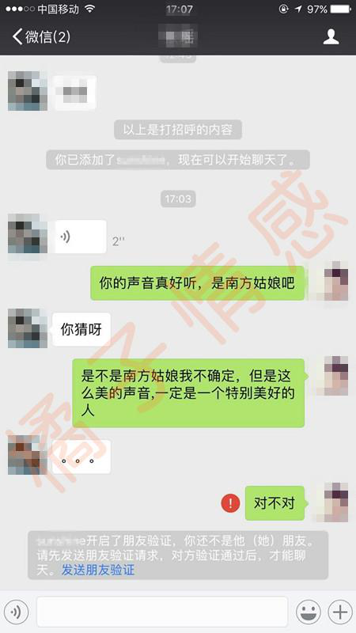
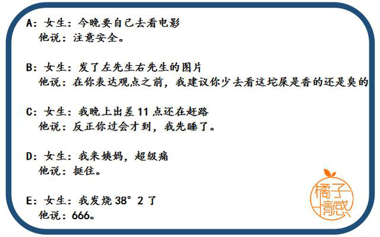

- 返回顶部
- 4006-299-520
- 在线咨询
- 微信公众号

大家好，我们是橘子情感。专注情感，为爱而生。 从业八年以来，橘子情感始终秉承着“专注情感、专业服务、专心经营”的原则， 致力于为大家提供挽回爱情、挽救婚姻、 分离小三、订制爱情等两性情感服务。
很多时候我们在和女生聊天的时候，不是每个人都是可以聊的风生水起的，很多人聊天聊着聊着，女生就再也不回了，聊天聊死了。。。多喝热水这个梗在网上早已传遍，也是直男思维的最讽刺的案例。喝热水还好说，但是如果女生给你的是性暗示，你不懂的背后隐含的意思，那兄弟你就悲剧了，注孤生，成为三千万单身男性之一，眼睁睁的看着你的女人成为别人的女朋友。。。
本期我们就来谈谈，一个男人会说话，对于撩女生到底有多么重要。
曹雪芹在红楼梦里提到“世事洞明皆学问，人情练达即文章”，说话是最容易的事，也是最难的事。最容易，因为三岁的孩子也会说话；最难，因为最擅长辞令的外交家也有说错话的时候。
我们在和女生聊天的时候，会不会说话，在这个过程中就起到了决定性的作用。不会说话到底有多可怕，我给大家分享几个学员和女生的聊天故事，大家就懂了。
娜娜的前男友大林就是不会聊天，娜娜直接就把他拉黑了。用娜娜的话说就是，大林的坟头草，应该差不多有两米高了。大林就是直男思维特别严重，很多时候就是觉得娜娜是无理取闹，做不到浪漫也就算了，但是一天说话能够把女生气到三回，这种就是无语了。
大林和娜娜去约会爬山，娜娜提前打电话问他，
“外面冷吗？”因为不确定要穿多少衣服，要不要带一件衣服。
结果他的回答气得娜娜真想立马摔掉电话：“我又不是你，怎么知道你会不会冷？”
娜娜忍住，继续问“我当然是问你的感觉，我并没问你我冷不冷啊”。
结果他说：“你要问我的感觉，我觉得不冷。”
娜娜狠狠的挂了电话，两个人的对话很快就结束了。
我经常说的，是保持自己的框架，但是咱们的要保持的是框架，不是不解人情的说话。像这种，我又不是你，我怎么知道这样的话，在很久之前就有人因为说“子非鱼，安知鱼之乐”“子非我，安知我不知鱼之乐”这样的话，两个人差点打起来。这种简简单单的对话，明显是女生在问你一下简单情况，你如实回答或者表达一下对女生的关心和你的真诚，嘱咐她一些要注意的小细节，都可以，但是这种无脑的回答，是真的会很让女生恼火。
女生有傻的吗，有，但是你遇到过几个傻的，几乎很少或者没有，你跟女生搭讪聊天的时候，女生会不知道你是准备套路她么，很多兄弟给我发过来的截图就让我很是头疼，他就是刚开始比较正常，还记得稳住自己，聊没几句，就开始明显的迎合女生，赞扬夸奖什么的，自己还觉得聊的挺开心的，女生就再也没有回复了。你这么聊天，女生肯定一眼看出你的需求，你下面的怎么办。我给大家举个这样的例子看：
我始终反复在强调一句话，聊天也许不会很出彩，但是一定不能出错。这种典型的没有自己的框架，而且刚一开始就直接暴露了自己的需求，这样会使自己很被动，之后你想挽回自己的地位也会比较困难，因为你的负面印象已经存在，你做很多很多都不一定会磨灭你的印象。对于陌生人刚开始聊天的时候，套路可以有，但是请玩的高深一些，不要说玩这样感觉自己很厉害，很会撩妹的简单小手段，你的自以为是会害你错过很多女生。
上面那两个相对于下面这个来说，还是比较好的，因为下面这几段对话，简直是直男癌晚期，
兄弟，咱们真的是不带这么玩的，这样不管是换多少个女生都不会理你的，更不用说要怎么进行邀约了。那么，正确的聊天是什么样的，要注意什么呢
对于展示面这个老生常谈的话题，很多人都说，我知道我知道，不就是微信朋友圈发图么，然后就把一张在农村堆满垃圾的地头拍了一张自己家一个月没洗澡的狗的照片，照片下半截还拍到自己的一点破拖鞋，请允许我摸一下自己的心跳是不是被吓到停止了，展示面顾名思义就是展示给女生看的，要的是从这些里面能够看出，你是一个积极上进稳重大气、负责任而且帅气幽默的优质好男人，当然不乏有女生会期盼田园的生活，但是人都是视觉动物，美好的东西才是人人都想拥有的，也只有这样的展示才会是不断提高你自己的吸引力的。
对于陌生人，女生不会热情的，如果女生特别特别的热情，你很有可能是遇到卖保险的了。咱们就是说搭讪之后开始聊天了，不要着急，千万不要急急忙忙就开始特别热切和女生聊天，什么次次秒回，什么表情包轰炸，不需要，就简简单单的开个唱，互道一句你好，回顾一下认识的场景，问下“有没有吓到你”，自然的聊几句，等待下女生的反应，之后再跟据女生的反应来做我们相应的反馈。
说什么话题好，说什么样的话题女生会愿意听，会服从于你，这是很多人都绞尽脑汁的难题。试想一下，你跟你的哥们，跟你的朋友们，聊天的时候没有话题可以聊么，当然不是，有的时候我们会和哥们聊很久，因为你没有任何的负担，你不会去患得患失，你非常的自信，就算是说错话什么的，你也是不在意的，但是你和女生聊的时候，担心会说错话被女生拉黑，担心女生怎么还没有回复你，其实就是担心因为聊天而毁了你们之间的联系，你的姿态是小心翼翼的，如履薄冰，不断的去揣摩女生的心理，不仅很累而且很多时候吃力不讨好，女生好像并不吃这一套。所以，不要畏手畏脚的，不要过早的暴露自己需求，把握住聊天的主动权，稳住自己的框架，话题你希望说些什么是可以由你来决定，选择非常多元化，非常简单。
之前给大家举的反面教材，其实就有一个通病，根本不在意女生的情绪，就是不管女生是在怎么说，都是以自我为中心，这样会使人觉得你不是风趣，而是刻薄。没有任何一个人喜欢和一个自私自利的人交往。所以在聊天的时候，要做的是要真诚，哪怕套路少一点，让女生知道，你是关心她的。还有像有的学员跟女生聊天，聊的是理科物理化学生物之类的理论知识，女生能听进去的就像是上了一节课，更多的是没聊几句，女生就再也不会回复了。对方不感兴趣的话题不一定是你一直在聊你自己，你聊一些和生活常识脱节很多，或者需要很高深的学识才能懂的，那么你也要考虑女生的学识情况，不要好为人师。
展示自己的高价值，和展示面的道理是相通的，我们在与一个人聊天的时候就会知道，这个人的言谈举止能够反映出这是一个怎样的人。我们和女生聊天的时候，不断根据女生的反应来做出反馈，同时女生也会通过聊天对你进行观察和了解，所以你的聊天也是展示自己的一个非常好的平台。但是，这个要注意一点，度的把握，我们是展示自己的高品质生活，不是炫耀，炫耀本身就会使人反感，更别提对你有兴趣。怎么不显得炫耀呢，接地气。接地气一些，比如说，“我之前的工作可以满世界飞，去过很多很多的国家，看过非常多的风景”，这就比较的装逼了，所以我只后就会说“其实背后很累”，或者说一些有趣的见闻，活跃下气氛。
不是每个话题都是孤零零的一个个，而是很多话题也就就是从上句话延伸过来的，比如，女生说了句话“今天的工作很累，而且还被领导挑毛病”，这样的话说出来，女生在跟你分享她的生活状态，这是一个非常好的IOI(兴趣指标)，你可以根据女生的两句话去展开话题，比如工作很辛苦么，朝九晚五么，或者可以针对被领导挑毛病来谈谈性格，是因为什么被挑毛病，你已经做事很认真了，我的领导也是经常挑我毛病什么的，找到契合的点，切入进去即可。
①阐述自己的状态
“我刚健身回来，浑身舒畅”、“在吃XX，你吃了没，馋馋你”、“在看ＸＸ，里面的女二号和你好像”
②借助客观环境
“最近雾霾好重，真的是自强不吸了”、“最近几天天气终于舒心些了”、“听说最近ＸＸ开了一个滑雪场”
③表明自己的看法
“看你萌萌的像个小女生，没想到做事还挺干练的”、“最近发生的那个ＸＸ事，我觉得ＸＸＸＸ，你觉得呢”
以上是我这期想给大家通过这些案例来说的一些聊天中注意的事情，刚开始聊天可能不出彩，但是一定不能出错。这些问题不管你以前是否发生过，或者你是否忽视过，请你反思一下，多多思考，并且真正的学会运用到实践中去。
我们是橘子情感，专注情感，为爱而生。如果你有任何关于情感方面的问题，可以咨询我们专业的情感导师。
{kind=link}